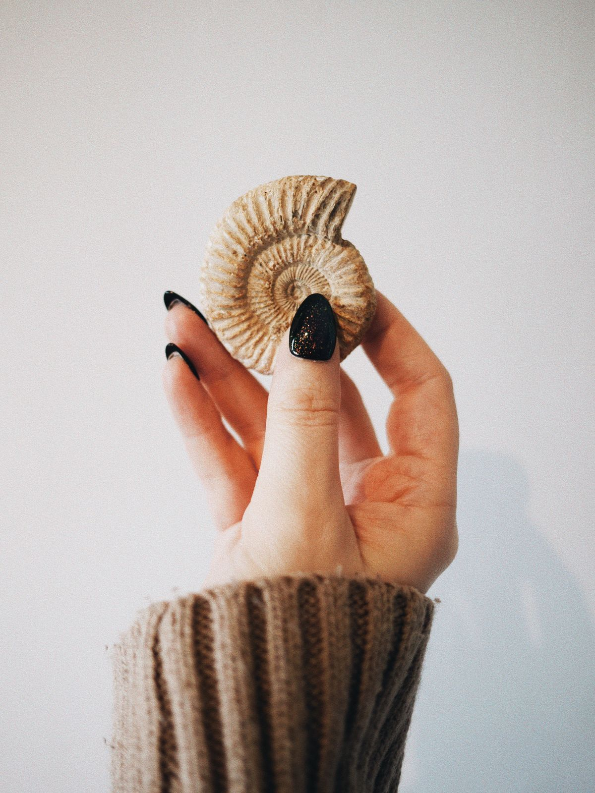

Specimen sheet No. 03 — the practiceKeeper of the register
The keeper
Dr. Edith Marlowe
I came to amber through leaves. A first degree in plant sciences, a doctorate on Cretaceous flowering-plant leaves, and then six years in a university herbarium — the years that taught me the trade this practice actually runs on. A herbarium is a library where every book is a plant and every catalogue entry is an argument somebody made once, in pencil, and nobody checked. I spent those years checking.
Amber work followed naturally: an inclusion is a specimen that arrives with its own catalogue of claims already attached — a deposit, an age, a story, sometimes a price. Since 2009 the practice has documented more than 1,100 pieces for museums, universities and collectors from a bench in Bristol, travelling for the collections that cannot travel. The work is identification, imaging and record-keeping, done slowly enough to be believed later.
Credentials, stated the way the register states everything: doctorate in palaeobotany; fifteen years of bench work on amber and compression fossils; audits and loan documentation for regional and university collections; methods and corrections published with the collections that own the pieces, where they belong.
“A label is a hypothesis with a date on it. I write mine carefully, and I keep the eraser — a correction entered openly is worth more than a certainty defended badly.”

The working page
How a documentation runs
- Intake & condition record
The piece is photographed as it arrives, weighed, measured, and its existing labels transcribed word for word — including the wrong ones. Nothing is cleaned, polished or “improved” before this record exists.
- Handling & first examination
Amber is soft, warm-sensitive and static-prone; it is handled on padded supports, never polished on this bench, and examined first by eye and transmitted light. Fragile pieces are flagged here, because fragility is what moves the price and the plan.
- Imaging
Publication-grade photography as standard. Where the question lives inside the piece, micro-CT is booked by the session day and the volumetric record becomes part of the deliverable — the client owns the scan, not a summary of it.
- Comparison
The inclusion is read against reference collections and the published descriptions for the claimed deposit. A claim that cannot be compared cannot be confirmed, and the opinion says so when that happens.
- The written opinion
Each piece leaves with a register entry: what it is, the confidence attached (high, moderate or low) and the characters that carry the identification — plus the ones that argue against it, where they exist. Corrections to earlier labels are entered as corrections, dated, never overwritten.
The honesty page
- An identification is an opinion with a confidence attached. It is a scientific statement about evidence, written so another specialist can disagree with it productively.
- It is not an authentication for sale, and not a valuation. Those services are not offered here, to anyone, at any fee — the register’s last row is permanent.
- Locality and age on old labels are claims, recorded as claims. Nineteenth- and twentieth-century collections routinely carry deposits and dates that were guesses, hopes or sales talk. The register keeps them visible and labelled, because hiding them would falsify the collection’s history.
- Amber cannot be carbon-dated. The radiocarbon panel on the register page shows why, in arithmetic anyone can check. Age here is argued from the deposit and its dated context.
- Declined opinions are recorded like accepted ones. Three so far. The reasoning is written, signed, and kept — a register that hides its refusals is only a brochure.
Engagement terms
Fees, turnaround, and the edges of the work
- Register & photograph onlyRegister entry, condition note, photographs£95 / piece
- Standard documentationWith the identification opinion and its confidence£210 / piece
- Deep documentationAdds micro-CT and the comparative write-up£460 / piece
- On-site audit dayCollections over 25 pieces are quoted as a programme£780 / day
The full fee table and the estimator are on the register page. The written quote follows the intake record and is fixed before bench work begins.
Turnaround. Single pieces: three to four weeks from intake. Audits are scheduled as programmes — one slot per quarter, because an audit done in a hurry is a second wrong catalogue. Loan documentation is scheduled against the exhibition’s dates and booked first.
Travelling pieces. Pieces come by insured courier at the client’s cost, or the work happens on site at the audit day rate. The practice does not accept pieces through ordinary post, and says so before anything is wrapped.
Payment. Institutions on purchase order; private collectors, half on intake and half when the register entries are delivered. The opinion is the same either way, which is rather the point.
Availability. The bench is currently booking identification work about four weeks out; the single-piece waitlist runs to about six. The register page carries the live position.
Ready when the register is: enter an enquiry, or write to enquiries@marlowepalaeobotany.example.